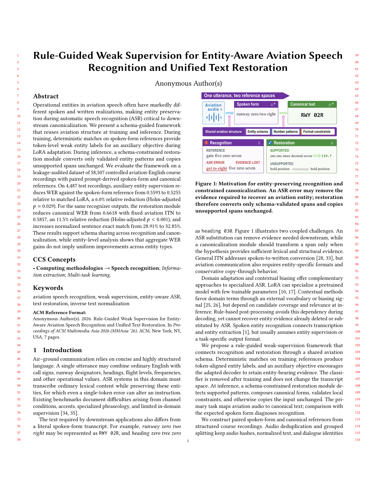

科研项目 · 2026
航空语音识别与统一文本恢复
从航空录音到口语转写，再到规范书面文本。通过参数高效适配与实体级评估，研究整体识别准确率与关键航空信息可靠性之间的差异。
个人实习实验：12,000 train / 1,200 dev / 1,200 test。论文完整实验：58,507 条课程录音，作为背景材料单独列示。

研究路线
两个阶段，四层评价01 / INPUT航空课程录音共享音频归档与冻结数据清单
02 / RECOGNITIONWhisper + Decoder LoRA生成 spoken-form，计算 WER、Exact 和实体指标
03 / RESTORATION规则 / Flan-T5 / Gate恢复 canonical 文本，并分析上游错误传播
以 oracle spoken、基模 ASR 和任务一 ASR 作为不同输入，分别识别恢复能力与实际串联表现。方法与评估协议
个人实验结果
冻结子集的最终 test，n = 1,200任务一 · spoken-form ASR
WER60.34% → 50.14%
Exact22.75% → 34.25%
实体 micro F154.33% → 46.52%
Decoder-only LoRA 提高整体转写指标，但实体精确率下降，呼号误报突出。
任务二 · canonical 文本恢复
dev 选定主方案 WER54.73%
主方案 Exact / 实体 F133.92% / 48.93%
固定 T5 + gate 对照 WER52.08%
主方案为任务一 ASR + legacy rules，按 dev 指标预先选定；test 的其他指标仅作为对照报告。
关键发现与边界
WER 不能代替实体可靠性
更少的词错误可与更多错误呼号同时出现。跑道、航向、频率等关键字段需要单独评价。
干净输入不代表真实串联系统
T5 在 oracle spoken 上可学习格式转换，但 ASR 已经丢失的实体证据无法仅靠规范化可靠恢复。
保留异常与复核记录
任务二 test 有一条超出输入预算的样本；失败、回退、复用和评分分母均在最终报告中披露。
课程录音不是实时无线电；实体标签来自固定规则，不是人工金标准。局限与后续工作